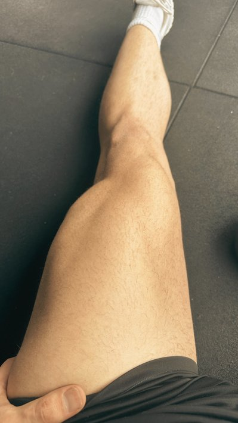

(y cómo aplicarlas en tu entrenamiento)
Especialista en readaptación de lesiones de rodilla
Si estás leyendo este documento, existen 1 de dos opciones: o te has lesionado ya, o quieres saber cómo evitarlo. En ambos casos, estarás de acuerdo en que la masa muscular es fundamental para ser más funcionales y prácticos... ¡que para eso estamos los seres humanos! No para no ser capaz de correr a por el autobús o agacharnos por culpa de una lesión.
Construir masa muscular no se trata de estar “más grande”, sino de estar mejor preparado. Es lo que te da estabilidad, control y seguridad en cada paso. Es lo que te permite volver a correr, saltar o jugar sin miedo. Cuando tienes fuerza, todo mejora: tu recuperación, tu rendimiento, tu estado de ánimo, tu día a día y tu vida en general.
Por eso, entender cómo ganar masa muscular —de verdad, basándonos en lo que dice la ciencia que es lo más óptimo— es clave.
Y en esta guía te explico los 3 pilares esenciales para lograrlo: la tensión mecánica, el estrés metabólico y el daño muscular
Es la fuerza que aplicas sobre el músculo cuando lo contraes bajo carga. Cuanto más tiempo mantienes esa tensión con un buen control, mayor señal anabólica para el crecimiento muscular.
Claves de la tensión mecánica:
Es decir, que las típicas series de fuerza en las que haces la repetición rápida, hablando con tu amigo distraído o con gomas, lo único que hacen es fatigarte a lo tonto, sin conseguir resultados.
Es la “quemazón” que sientes cuando haces muchas repeticiones o tiempos bajo tensión prolongados. Genera acumulación de metabolitos como el lactato, que promueven la hipertrofia muscular.
Claves del estrés metabólico:
Series más cortas trabajarán más la fuerza máxima (número de kilos que levantes) que la hipertrofia (incremento del tamaño del músculo).
Emplear técnicas en las que haya una alta fatiga metabólica (no muscular) como las series “dropset”, “rest-pause”, “superseries”... son de mucha utilidad para potenciar el estrés metabólico, ¡pero generan muchísima fatiga! Así que NO abuses de ellas, introdúcelas de forma estratégica.
Es una consecuencia de la tensión mecánica. Es el “microdaño” que ocurre en las fibras musculares cuando haces ejercicios con alta carga y con un rango de movimiento (ROM) elevado. El cuerpo lo repara… y en ese proceso se vuelve más fuerte y grande.
Claves del daño muscular:
Gracias a aplicar estas 3 claves a mis propios entrenamientos y planificaciones es como he conseguido tener esta masa muscular, tanto en tren inferior como superior:


Como siempre digo, no es cuestión de magia, es cuestión de hacer las cosas bien
En redes hablo a menudo de por qué la fuerza y la masa muscular son la base para que una rodilla NO recaiga.
Si todo esto te ha encajado, probablemente ya entiendas por qué muchas recuperaciones se estancan y otras no.
A partir de aquí, el siguiente paso no es hacer más cosas, sino hacerlas con criterio y continuidad.
Si quieres ver cómo se aplica todo esto en casos reales, en la web tienes bastantes ejemplos documentados acerca de los procesos de otros lesionados como tú.